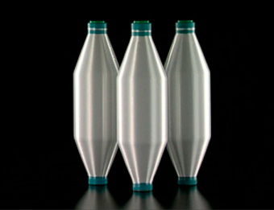

汎用ポリエステル繊維に加え、高強力・高弾性率を有する液晶ポリエステル繊維や耐薬品性・耐加水分解性に優れたPPS繊維などの高機能原糸を提供し、衣料用途から工業・資材用途まで幅広い分野でお客様のニーズにお応えします。

| アクアウェーブ® | 「アクアウェーブ」は、Ｍ型断面ポリエステルフィラメントです。M型断面が、吸水速乾性、ハリ、コシ感、ゆるやかなストレッチ性を生み出します。 |
|---|---|
| アクシア® | 「アクシア」は、接触冷感ナイロンフィラメントです。芯部の特殊ポリマーによる、高い吸湿性と制電性に加え接触冷感性にも優れています。 |
| イマージュ® | 「イマージュ」は、遮光効果のある超微粒子剤を練り込んだポリエステルフィラメントです。強い日差しからの温度上昇を抑制する遮熱性、透け防止性、紫外線遮蔽性に優れています。 |
| イレイド® | 「イレイド」は、芯部に赤外線反射セラミック、鞘部に酸化チタンを配置した芯鞘構造型のコンジュゲートフィラメントです。赤外線を反射する遮熱効果と紫外線をカットするUV効果を併せ持ちます。 |
| ヴェガ® | 「ヴェガ」は、細繊度フルダルポリエステルフィラメントです。上品な光沢感、優れたドレープ性でソフトな風合いを表現することができます。 |
| エスパンディ® | 「エスパンディ」は、二種類のポリマーを貼り合わせた構造のサイドバイサイドコンジュゲートフィラメントです。 加工段階で収縮差によるクリンプが発生し、適度なストレッチ性を生み出します。 |
| グラディオ® | 「グラディオ」は、PPS（ポリフェニレンサルファイド）から製造されたフィラメントです。耐薬品性、耐加水分解性、耐熱性、絶縁性、難燃性に優れています。 |
| 「コスモアルファ」は、アルカリ溶解割繊型ポリエステルフィラメントです。アルカリ処理後は9分割のポリエステル100％マイクロファイバーになり高い吸水性とソフトな風合いを生み出します。 | |
| シデリア® | 「シデリア」は、ナイロン/ポリウレタンコンジュゲート潜在捲縮フィラメントです。適度な伸縮性、透明感・さらさら感があり、高級なパンティーストッキングに使用されています。 |
| シルクール® | 「シルクール」は、赤外線・紫外線反射機能を持つ遮光ポリエステル加工糸です。遮熱・UVカット効果で、健康で安心できる暮らしのための快適繊維です。 |
| ゼクシオン® | 「ゼクシオン」は、LCP（液晶ポリエステル）を使用した、高強度・高弾性フィラメントです。低線膨張率・耐熱性・耐酸性・耐切創性・振動減衰性・低誘電性に非常に優れています。 |
|
ソアフル® |
「ソアフル」は、収縮率の異なる2種の糸を混繊した異収縮混繊ポリエステルフィラメントです。糸の異収縮性がテキスタイルに適度な膨らみ感・ドレープ性を与えます。 |
| ソアリオン®Y | 「ソアリオンY」は、吸水速乾性、軽量性を有するＹ型断面ポリエステルフィラメントです。ソフトでサラッとした肌ざわり、ハリ・コシのある風合いを与えます。 |
| ソアリオン®YC | 「ソアリオンYC」は、吸水速乾ポリエステルフィラメント「ソアリオンY」にUVカットと接触冷感性を付与したポリエステルフィラメントです。ソフトでハリ・コシのある風合いを与えます。 |
| ソアリス®P | 「ソアリスP」は、帯電を抑制する制電ポリエステルフィラメントです。まとわりつきやパチパチ感、ホコリの付着を軽減します。 |
| ビバン® | 「ビバン」は、U断面のシックアンドシンポリエステルフィラメントです。その断面形状から吸水・速乾性に優れ、ふくらみ感、ハリ・コシ感、ドライ感、ナチュラル感のある素材を生み出します。 |
| フレサーモ® | 「フレサーモ」は、赤外線吸収ポリエステル蓄熱フィラメントです。特殊機能剤が赤外線を吸収し、熱変換することで蓄熱する効果を促進します。 |
| ベリーマ® | 「ベリーマ」は、ナイロン/ポリエステル分割型複合フィラメントであり、割繊後はナイロン1本ポリエステル4本に5分割されたマイクロファイバーになります。天然繊維との交織交編素材から、ワイピングクロスなど幅広い展開が可能です。細繊度によりやわらかな風合いが得られます。 |
| ベリーマ®X | 「ベリーマＸ」は、ナイロン/ポリエステル分割型複合フィラメントであり、割繊後はナイロン1本、クサビ状ポリエステル8本に9分割され、5分割の「ベリーマ」より更に細いマイクロファイバーになります。衣料用途から産業資材まで幅広い展開が可能です。 細繊度によりやわらかな風合いが得られます。 |
| ベルカップル® | 「ベルカップル」は、芯部に通常のポリエステルを、鞘部に低融点ポリエステルを配置した芯鞘型熱融着ポリエステルフィラメントで、優れたヒートシール性（目ズレ防止）、 形態安定性、硬度調整性が得られます。 |
| ベルスクェア® | 「ベルスクェア」は、特殊扁平ポリエステルフィラメントです。光透過性があるため、透明感と美しい光沢、ミラー効果のあるテキスタイルに仕上げることができます。 |
| ベルトロン® | 「ベルトロン」は、高性能導電性フィラメントで、低湿度環境下でも帯電防止効果を発揮します。少量混合で十分な効果が得られます。 多様な用途に対応できるようにバリエーション多く取り揃えております。 |
| ベルピュア® | 「ベルピュア」は、アルカリ易溶ポリエステルフィラメントです。アルカリ溶解速度が、レギュラーポリエステルより格段に速いフィラメントです。 |
|
モエセーブ® |
「モエセーブ」は、非ハロゲン系であるリン系難燃剤を使用したフィラメントです。燃えにくく、燃え広がりにくい性質があります。 |
| モス® | 「モス」は、特殊高収縮糸を使用し、素材表面がループ状となることでふくらみ感を表現する異収縮混繊フィラメントです。 |
| モノフィラメント | 細繊度で高強度が特徴の芯鞘型モノフィラメントです。目ズレがしにくいタイプ、インクとの馴染みが良いタイプがあり、スクリーンメッシュやフィルター等に最適です。黄原着タイプもあります。 |
| モンターナ® | 「モンターナ」は、ポリマーの異なるフィラメントを混繊したポリエステルフィラメントです。杢調、フルダル糸ならではの上品な艶も得られます。 |
| ライトロン® | 「ライトロン」は、ブライト中空三角断面ポリエステルフィラメントです。軽量で高い保温性が得られ、独特な光沢感があります。 |
| リブフレッシュ® Pスーパー |
「リブフレッシュPスーパー」は、抗菌ポリエステルフィラメントです。SEKマークの認証を抗菌防臭加工及び制菌加工（一般用途）で取得しています。 |
| ルシーナ® | 「ルシーナ」は、常圧カチオン可染ポリエステルフィラメントです。カチオン染料を用い、約100℃の常圧下での染色が可能で、優れた発色性、高い洗濯堅牢度を発揮します。常圧染色により、環境に優しくCO2排出量の削減を可能とします。 |
| ルシーナ®U | 「ルシーナU」は、吸水速乾機能のある常圧カチオン可染ポリエステルフィラメントです。カチオン染料を用い、約100℃の常圧下での染色が可能で、優れた発色性、高い洗濯堅牢度を発揮します。常圧染色により、環境に優しくCO2排出量削減を可能とします。 |
| レジエール® | 「レジエール」は、収縮差の大きい2種類の糸を混繊し豊かなふくらみ感を表現する異収縮混繊フィラメントです。 |